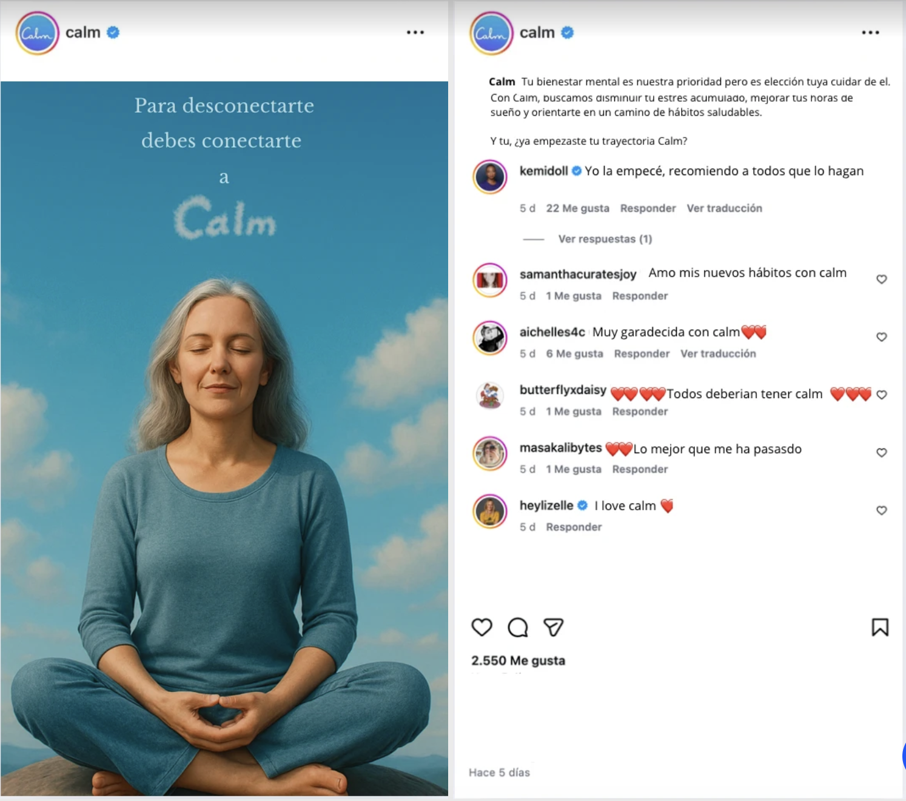
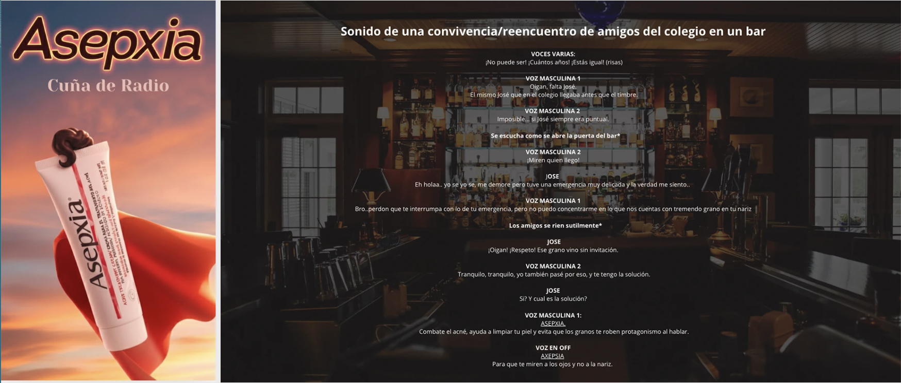
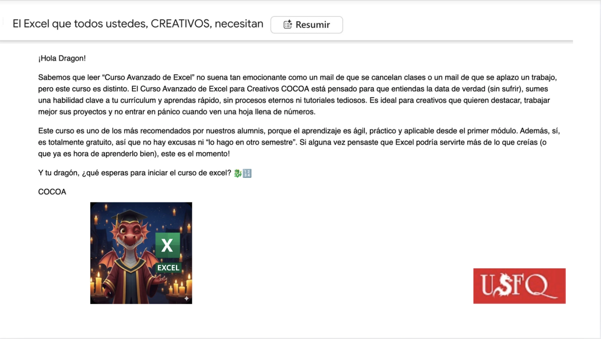
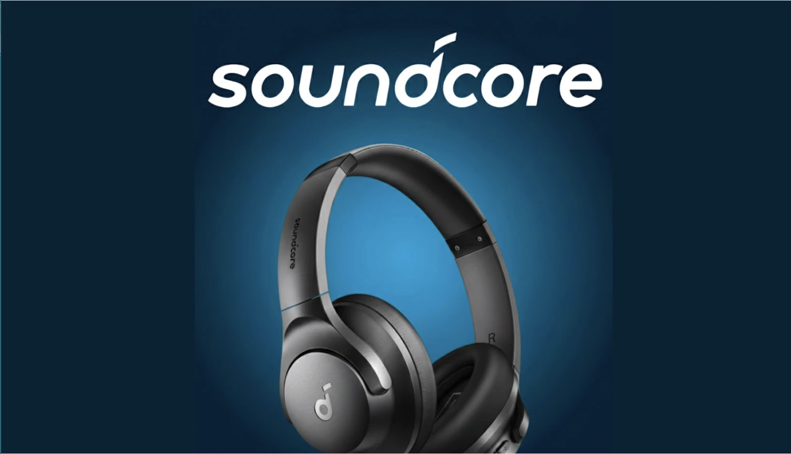
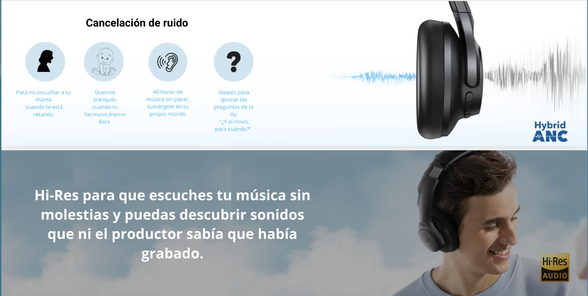
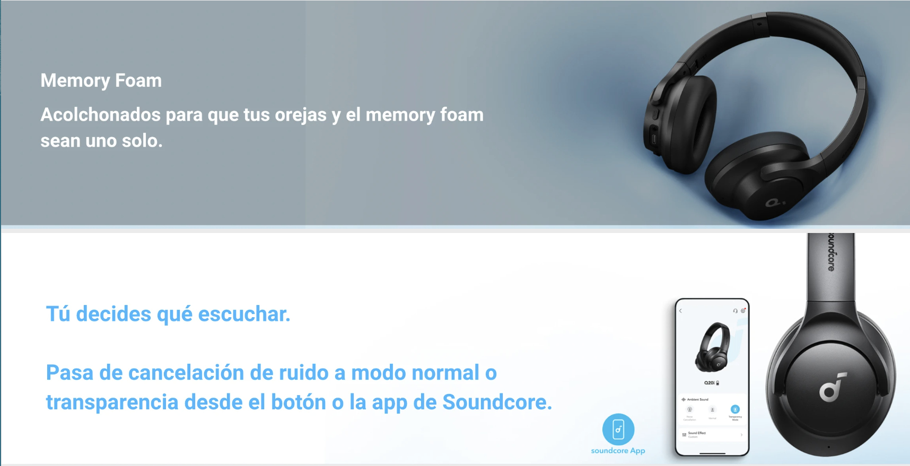

Direct response






De qué se trata el proyecto
Este proyecto presenta diferentes piezas de *publicidad de respuesta directa, diseñadas para captar la atención del público y generar una reacción inmediata. Una de las campañas promociona **Calm*, destacando sus beneficios para reducir el estrés, mejorar el sueño y ayudar a las personas a crear hábitos más saludables. El mensaje central invita al público a empezar su “trayectoria Calm”, resaltando que el bienestar mental depende también de la decisión personal de cuidarse. El proyecto también incluye un guion de radio para *Asepxia, en el que un grupo de amigos se reencuentra y uno de ellos llega con un grano en la nariz. La situación humorística sirve para introducir el producto como la solución para el acné. Finalmente, se presenta una propuesta publicitaria para audífonos **Soundcore*, destacando características como cancelación de ruido, comodidad con memory foam y alta calidad de sonido. En conjunto, el proyecto utiliza humor y situaciones cotidianas para mostrar cómo estos productos solucionan problemas del día a día.